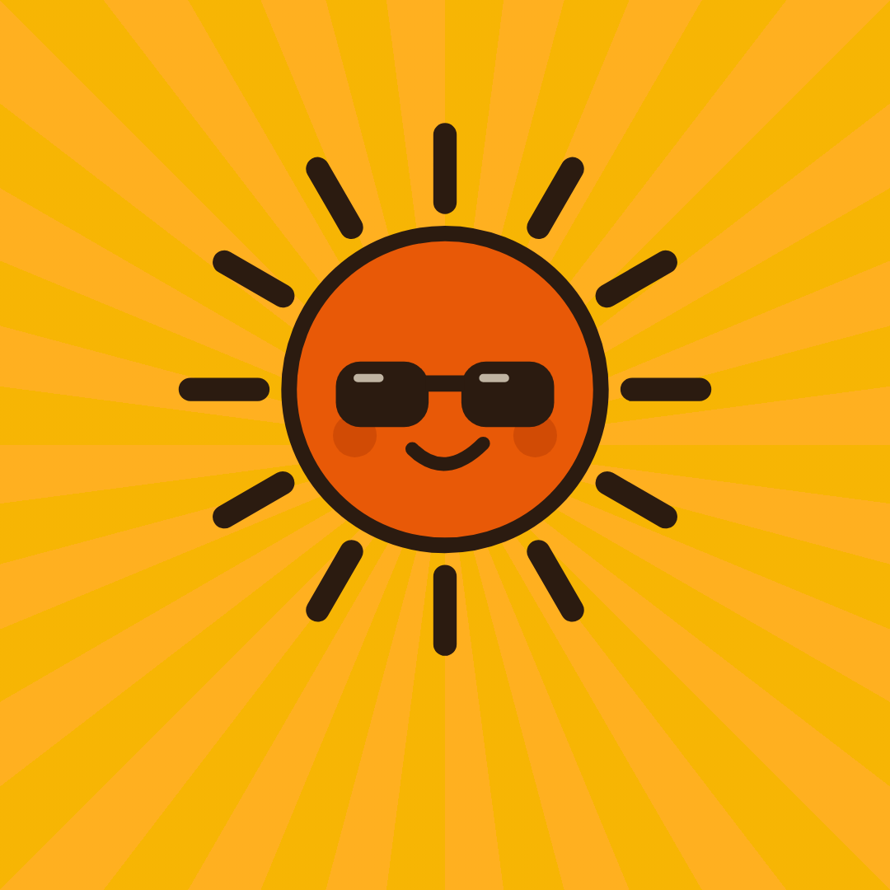
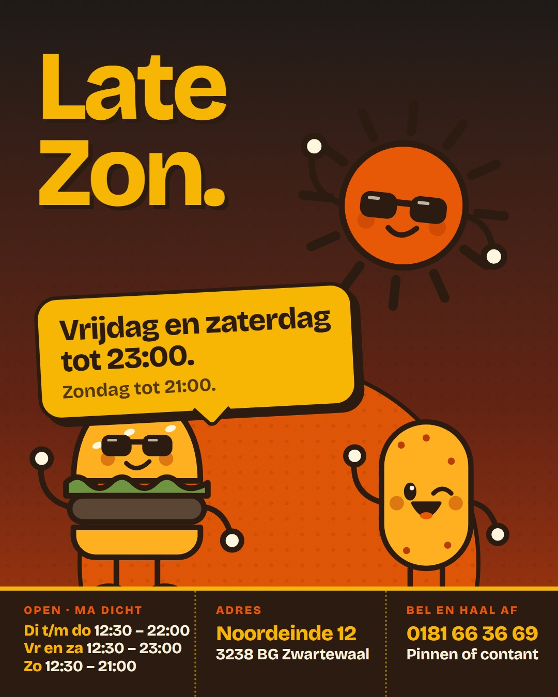
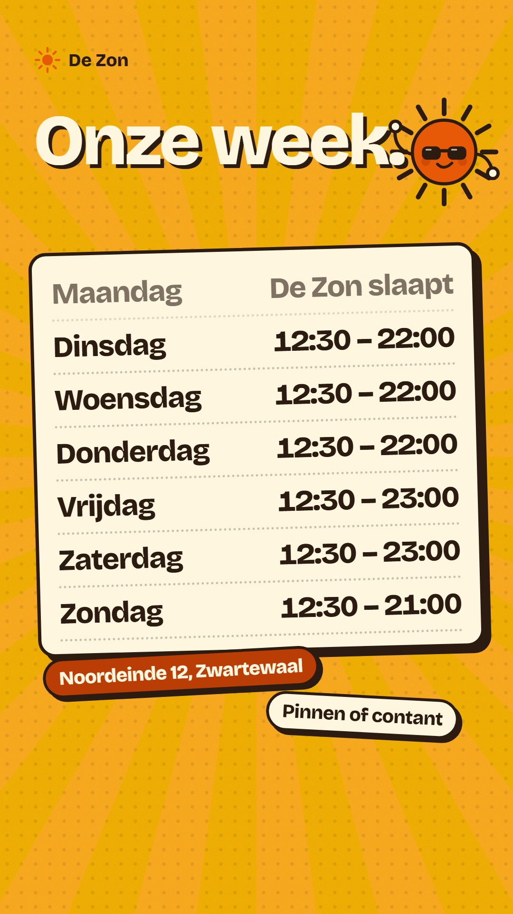

Voorbeelden




Cafetaria De Zon, Zwartewaal. Dit document hoort bij de goedgekeurde website en vertaalt de huisstijl naar Instagram en Facebook.
De Zon is warm, gezellig en een beetje speels. We praten als een buur: kort, vriendelijk, met een knipoog. We beloven niets wat niet is bevestigd.
Gebruik per afbeelding één dominante kleur (zonnegeel, crème, brandoranje of nacht). Tekst altijd inktbruin op geel of crème, crème op oranje, nachttekst op nacht. Contrastwaarden zijn gemeten met de WCAG-formule.
Bricolage Grotesque
| Rol | Gebruik | Gewicht en maat (feed 1080 breed) |
|---|---|---|
| Kop | Eén tot vier woorden, korte zinnen | 800, 100 tot 160 px, regelafstand 0,9, letterafstand -4,5% |
| Lead | Eén ondersteunende zin | 600, 42 tot 48 px |
| Chip | CTA (bel, adres, reageer) | 800, 46 px, rand 5 px inkt |
| Infoband | Naam en adres | 700, 30 px |
Lettertype: SIL Open Font License 1.1. Verbind de woorden "De Zon" in een kop met een vaste spatie zodat de naam niet breekt.
De bende van De Zon: Zon, Frietje, Burg, Snack, IJsje en Slaatje. Eigen tekeningen met dikke inktlijn en vlakke kleuren, elk met een gezicht, armen en benen. Ze praten in stripballonnen en reageren op elkaar. Alleen figuurtjes voor producten die echt bestaan; geen A-merken. Gezichten: blij, cool (zonnebril), verrast, knipoog, slaperig en verdrietig.
Zonnestraal-achtergronden met een fijn stippenraster, harde inktschaduwen op kaarten, ballonnen en stickers, en een donkere infoband onderaan met openingstijden, adres, telefoon en "pinnen of contant". De figuurtjes staan achter de toonbank (de infoband). Stickers zijn sterren met 6 px inktrand, licht gekanteld.
Lucide (ISC-licentie), lijndikte 2, afgeronde uiteinden: telefoon, route, tas, pas, reactie, mensen, klok.
| Plaatsing | Formaat | Regel |
|---|---|---|
| Instagram en Facebook feed | 1080 × 1350 px (4:5) | Infoband onderaan; tekst niet dichter dan 84 px bij de rand |
| Carrousel | 1080 × 1350 px | Teller bovenin, swipe-aanwijzing linksonder, laatste slide met CTA |
| Stories en Reels | 1080 × 1920 px (9:16) | Houd de bovenste 250 px en onderste 340 px vrij van belangrijke tekst |
| Reel-covers | 1080 × 1920 px | Titel binnen de middelste 1080 × 1350 px, zodat de uitsnede in het profielraster werkt |
| Profielfoto | 1080 × 1080 px | Cirkelvormig bijgesneden: zon blijft midden |
| Facebook-omslag | 1640 × 624 px | Naam links, zon rechts |
Er zijn nog geen eigen foto's. Zodra die er zijn:
Bij een foto in een post gebruik je het sjabloon templates/sjablonen/sjabloon-foto-feed.



Elk ontwerp is een HTML-bestand in templates/html. Pas de tekst aan in een editor, draai node tools/render.mjs en nieuwe PNG- en JPG-bestanden verschijnen in de mappen en in exports. Gebruik de sjablonen in templates/sjablonen voor acties, foto's en vragen.